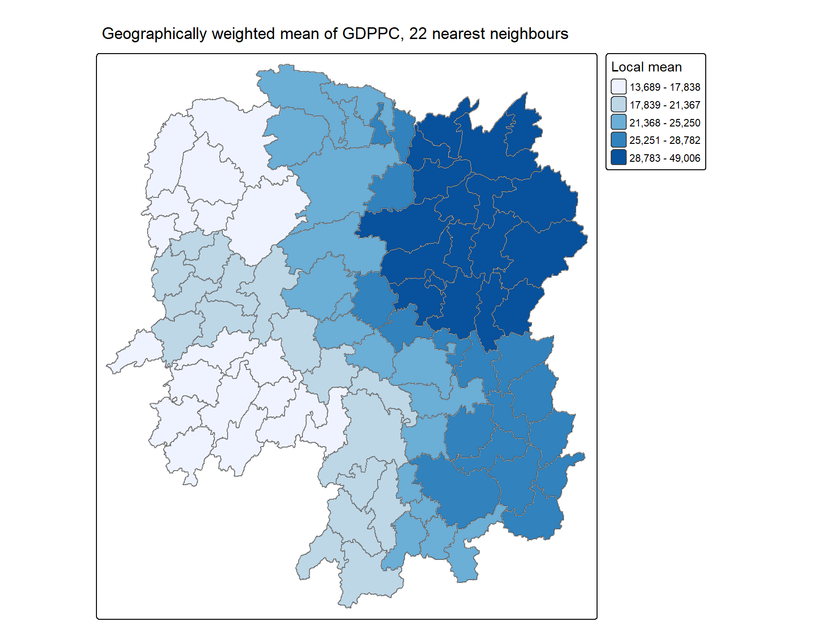
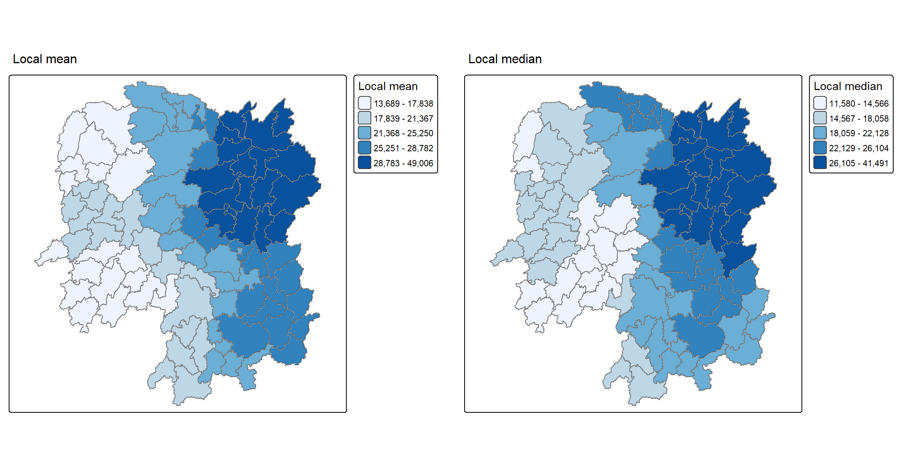
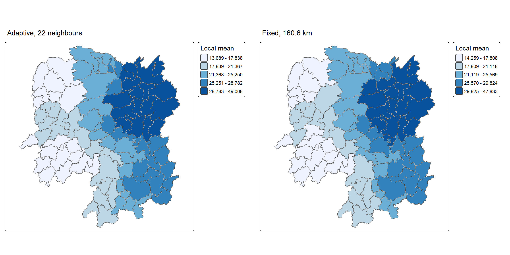
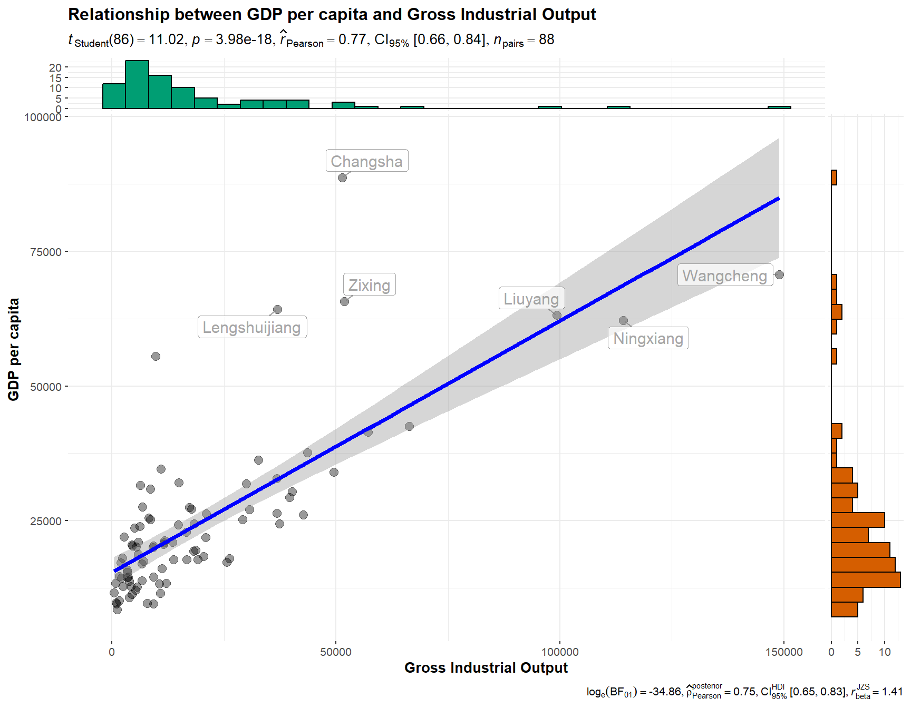
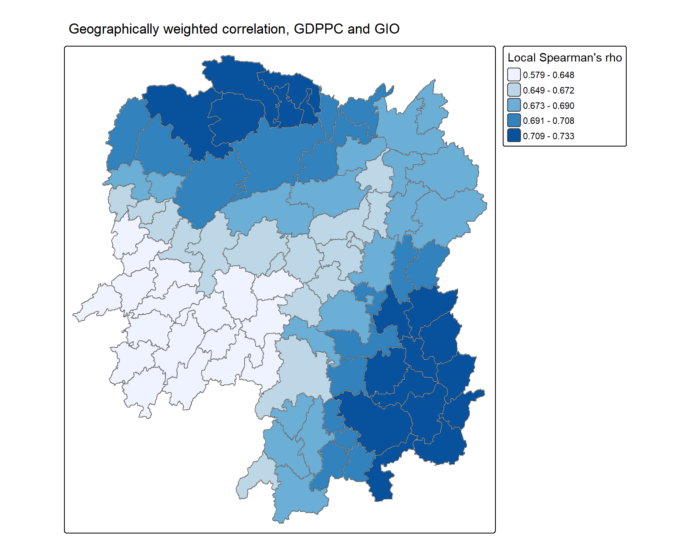
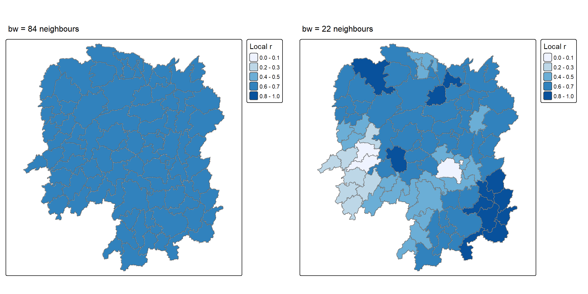

pacman::p_load(sf, ggstatsplot, tmap, tidyverse, knitr, GWmodel)In-class Exercise 4: Geographically Weighted Summary Statistics
Overview
Lesson 4 defines a neighbourhood twice over. The first definition is combinatorial: two counties are neighbours or they are not, by shared boundary or by a distance threshold. That definition produces the neighbour lists and row-standardised weights built throughout Hands-on Exercise 4, together with the spatially lagged variables that follow from them, and none of it is taught again here.
The second definition is continuous. A kernel replaces the in-or-out decision with a weight that decays with distance, and a bandwidth sets how quickly it decays. Every observation then contributes to every location, just by progressively less. This in-class exercise works entirely in that second branch:
- selecting a bandwidth by cross-validation and by AIC, adaptive and fixed,
- computing geographically weighted summary statistics, meaning the local mean, the local median and the rest of the robust family, with
gwss()of GWmodel, - computing geographically weighted correlation, and reading it against the single global correlation that conventional analysis would report.
spdep is absent from that list, and its absence is the point: no neighbour list is constructed anywhere in this document. The kernel is the weighting scheme, so the object that spdep exists to build is never needed. GWmodel supplies the geographically weighted methods, and ggstatsplot supplies the global correlation test that they are compared against.
The Data
The same two files as the hands-on exercise, but more of the attribute table is retained:
| Dataset | Description |
|---|---|
Hunan |
County boundary layer of Hunan province, China, in ESRI shapefile format |
Hunan_2012.csv |
Selected local development indicators for Hunan in 2012 |
Inputs Carried Over from Hands-on Exercise 4
Importing the shapefile with st_read(), importing the csv with read_csv(), and attaching one to the other with left_join() were all covered in Hands-on Exercise 4. The code is repeated here only so that this document runs on its own:
hunan_sf <- st_read(dsn = "data/geospatial",
layer = "Hunan") %>%
left_join(read_csv("data/aspatial/Hunan_2012.csv",
show_col_types = FALSE),
by = "County") %>%
select(1:3, 7, 15, 16, 31, 32)Reading layer `Hunan' from data source
`C:\Users\Imgigi\Desktop\629\in-class-ex\in-class-ex4\data\geospatial'
using driver `ESRI Shapefile'
Simple feature collection with 88 features and 7 fields
Geometry type: POLYGON
Dimension: XY
Bounding box: xmin: 108.7831 ymin: 24.6342 xmax: 114.2544 ymax: 30.12812
Geodetic CRS: WGS 84The import header is left visible: 88 polygon features with seven attribute fields, bounded by 108.7831–114.2544 E and 24.6342–30.1281 N, on geodetic CRS WGS 84. The layer is left unprojected throughout, since longlat = TRUE in the GWmodel calls below makes them compute great circle distances in kilometres from those coordinates.
One thing does differ from the hands-on version, and it is not cosmetic. There the join kept select(1:4, 7, 15), the identifiers and GDPPC alone, because a spatial lag needs exactly one variable. Here the selection is widened to eight columns, adding GIO (gross industrial output), Agri and Service, because the correlation section needs a second variable to correlate GDPPC against:
glimpse(hunan_sf)Rows: 88
Columns: 9
$ NAME_2 <chr> "Changde", "Changde", "Changde", "Changde", "Changde", "Chang…
$ ID_3 <int> 21098, 21100, 21101, 21102, 21103, 21104, 21109, 21110, 21111…
$ NAME_3 <chr> "Anxiang", "Hanshou", "Jinshi", "Li", "Linli", "Shimen", "Liu…
$ County <chr> "Anxiang", "Hanshou", "Jinshi", "Li", "Linli", "Shimen", "Liu…
$ GDPPC <dbl> 23667, 20981, 34592, 24473, 25554, 27137, 63118, 62202, 70666…
$ GIO <dbl> 5108.9, 13491.0, 10935.0, 18402.0, 8214.0, 17795.0, 99254.0, …
$ Agri <dbl> 4524.410, 6545.350, 2562.460, 7562.340, 3583.910, 5266.510, 1…
$ Service <dbl> 14100.0, 17727.0, 7525.0, 53160.0, 7031.0, 6981.0, 26617.8, 1…
$ geometry <POLYGON [°]> POLYGON ((112.0625 29.75523..., POLYGON ((112.2288 29…From sf to sp
GWmodel predates the simple features standard and its functions expect a Spatial*DataFrame from the older sp class system. as_Spatial() performs the conversion:
hunan_sp <- hunan_sf %>%
as_Spatial()Two objects now describe the same 88 counties. hunan_sp is the input for GWmodel, and hunan_sf remains the object tmap is given at the end. Results come back from gwss() in the order of the rows that went in, which is what makes the cbind() in the mapping sections legitimate. That join is positional rather than by key, so nothing between here and there may reorder or filter either object.
Determining the Bandwidth
The bandwidth is the one parameter that decides how local “local” is, and it is chosen by optimisation rather than by hand. bw.gwr() searches for the value that minimises a chosen criterion. CV is leave-one-out cross-validation, scoring how well each location is predicted from its neighbours; AIC penalises model complexity instead.
The search is run against the intercept-only model GDPPC ~ 1, since what is wanted is a bandwidth for describing GDPPC locally, not for regressing it on anything.
Adaptive bandwidth
An adaptive bandwidth holds the number of neighbours constant and lets the radius stretch or contract, so the kernel covers as many counties in the sparse west as in the dense north-east:
bw_CV_adaptive <- bw.gwr(GDPPC ~ 1,
data = hunan_sp,
approach = "CV",
adaptive = TRUE,
kernel = "bisquare",
longlat = TRUE)
bw_AIC_adaptive <- bw.gwr(GDPPC ~ 1,
data = hunan_sp,
approach = "AIC",
adaptive = TRUE,
kernel = "bisquare",
longlat = TRUE)Fixed bandwidth
A fixed bandwidth holds the radius constant instead, and the neighbour count varies with local density:
bw_CV_fixed <- bw.gwr(GDPPC ~ 1,
data = hunan_sp,
approach = "CV",
adaptive = FALSE,
kernel = "bisquare",
longlat = TRUE)
bw_AIC_fixed <- bw.gwr(GDPPC ~ 1,
data = hunan_sp,
approach = "AIC",
adaptive = FALSE,
kernel = "bisquare",
longlat = TRUE)tibble(Bandwidth = c("Adaptive", "Adaptive", "Fixed", "Fixed"),
Criterion = c("CV", "AIC", "CV", "AIC"),
Value = c(bw_CV_adaptive, bw_AIC_adaptive,
bw_CV_fixed, bw_AIC_fixed),
Unit = c("nearest neighbours", "nearest neighbours", "km", "km")) %>%
kable(digits = 2)| Bandwidth | Criterion | Value | Unit |
|---|---|---|---|
| Adaptive | CV | 22.00 | nearest neighbours |
| Adaptive | AIC | 22.00 | nearest neighbours |
| Fixed | CV | 76.29 | km |
| Fixed | AIC | 160.55 | km |
The two criteria behave differently depending on which kind of bandwidth they are searching over.
On the adaptive side, CV and AIC both settle on 22 nearest neighbours. Agreement between two criteria that optimise different things is the strongest evidence available here that 22 is a feature of the data rather than an artefact of the search. It amounts to a quarter of the province, which is a defensible reading of “local”.
On the fixed side, CV returns 76.3 km and AIC returns 160.6 km, more than double. That disagreement is diagnostic rather than a failure of either method. Hunan’s counties vary greatly in area, so a single radius means a different sample size everywhere it is placed. CV, scored point by point, chases the radius that fits the densest parts, while AIC tolerates a much broader kernel for the province as a whole. When a fixed bandwidth makes the two criteria disagree this sharply and an adaptive one makes them agree exactly, the adaptive specification is the one the data supports.
Geographically Weighted Summary Statistics
gwss() computes the summary statistics at every location, each one weighted by the kernel. Setting quantile = TRUE adds the robust family, meaning the local median, interquartile range and quantile imbalance, alongside the moment-based statistics:
gwstat <- gwss(data = hunan_sp,
vars = "GDPPC",
bw = bw_AIC_adaptive,
kernel = "bisquare",
quantile = TRUE,
adaptive = TRUE,
longlat = TRUE)names(as.data.frame(gwstat$SDF))[1] "GDPPC_LM" "GDPPC_LSD" "GDPPC_LVar" "GDPPC_LSKe" "GDPPC_LCV"
[6] "GDPPC_Median" "GDPPC_IQR" "GDPPC_QI" Eight surfaces for a single variable: local mean, standard deviation, variance, skewness and coefficient of variation from the moment-based side, then median, IQR and quantile imbalance from the robust side. Each is a vector of 88 values, one per county, rather than a single number.
Preparing the output
gwss() returns its results in the SDF slot as a Spatial*DataFrame. Extracting the data table and binding it column-wise to hunan_sf restores a mappable sf object:
gwstat_df <- as.data.frame(gwstat$SDF)
hunan_gstat <- cbind(hunan_sf, gwstat_df)Visualising the geographically weighted mean
tm_shape(hunan_gstat) +
tm_polygons(fill = "GDPPC_LM",
fill.scale = tm_scale_intervals(
style = "quantile",
n = 5,
values = "brewer.blues"),
fill.legend = tm_legend(
title = "Local mean")) +
tm_borders(col = "grey70", lwd = 0.4) +
tm_title("Geographically weighted mean of GDPPC, 22 nearest neighbours",
size = 1.1)
The local mean against the global one
tibble(Statistic = c("Global mean", "Local mean, minimum", "Local mean, maximum",
"Global median", "Local median, minimum", "Local median, maximum"),
GDPPC = c(mean(hunan_sf$GDPPC),
min(hunan_gstat$GDPPC_LM), max(hunan_gstat$GDPPC_LM),
median(hunan_sf$GDPPC),
min(hunan_gstat$GDPPC_Median), max(hunan_gstat$GDPPC_Median))) %>%
kable(digits = 0, format.args = list(big.mark = ","))| Statistic | GDPPC |
|---|---|
| Global mean | 24,405 |
| Local mean, minimum | 13,689 |
| Local mean, maximum | 49,006 |
| Global median | 20,433 |
| Local median, minimum | 11,580 |
| Local median, maximum | 41,491 |
Conventional analysis would report one number for Hunan, a mean GDPPC of 24,405 yuan. The geographically weighted mean replaces it with 88, running from 13,689 around Wugang in Shaoyang to 49,006 at Changsha, a 3.6-fold spread the single figure conceals entirely. This is spatial non-stationarity made measurable: the provincial average describes nowhere in particular, because the north-east corridor and the south-western uplands are not samples from the same population.
The smoothing is substantial and deliberate. Raw GDPPC ranges from 8,497 to 88,656, so the local mean surface compresses a 10-fold spread into a 3.6-fold one. What survives that compression is the regional signal, and what is removed is the county-level idiosyncrasy a spatial lag would have retained.
Robust statistics: local mean against local median
The moment-based and robust families are computed from the same kernel, so comparing them isolates the effect of the outliers rather than the effect of location:
lm_map <- tm_shape(hunan_gstat) +
tm_polygons(fill = "GDPPC_LM",
fill.scale = tm_scale_intervals(
style = "quantile", n = 5, values = "brewer.blues"),
fill.legend = tm_legend(title = "Local mean")) +
tm_borders(col = "grey70", lwd = 0.4) +
tm_title("Local mean", size = 1.0)
med_map <- tm_shape(hunan_gstat) +
tm_polygons(fill = "GDPPC_Median",
fill.scale = tm_scale_intervals(
style = "quantile", n = 5, values = "brewer.blues"),
fill.legend = tm_legend(title = "Local median")) +
tm_borders(col = "grey70", lwd = 0.4) +
tm_title("Local median", size = 1.0)
tmap_arrange(lm_map, med_map, asp = 1, ncol = 2)
summary(hunan_gstat$GDPPC_LM / hunan_gstat$GDPPC_Median) Min. 1st Qu. Median Mean 3rd Qu. Max.
0.9186 1.0918 1.1473 1.1737 1.2298 1.6355 The two maps share a pattern but not a level. The ratio of local mean to local median exceeds 1 almost everywhere, reaching 1.64. In the neighbourhoods around Changsha the weighted mean sits 64% above the weighted median, because a handful of very rich counties pull it upward while the median ignores them by construction.
That gap is itself the finding. Where mean and median agree, the local distribution is symmetric and either statistic describes the neighbourhood honestly. Where they diverge this far, the neighbourhood contains counties unlike their surroundings, and the mean surface is reporting their influence rather than the typical county. The robust surface is the more defensible description of the north-east, and the divergence between the two is more informative than either alone.
The Effect of the Bandwidth
Repeating the computation under the fixed bandwidth shows what the choice made in the previous section actually bought:
gwstat_fixed <- gwss(data = hunan_sp,
vars = "GDPPC",
bw = bw_AIC_fixed,
kernel = "bisquare",
adaptive = FALSE,
quantile = FALSE,
longlat = TRUE)
hunan_gstat_fixed <- cbind(hunan_sf, as.data.frame(gwstat_fixed$SDF))adaptive_map <- tm_shape(hunan_gstat) +
tm_polygons(fill = "GDPPC_LM",
fill.scale = tm_scale_intervals(
style = "quantile", n = 5, values = "brewer.blues"),
fill.legend = tm_legend(title = "Local mean")) +
tm_borders(col = "grey70", lwd = 0.4) +
tm_title("Adaptive, 22 neighbours", size = 1.0)
fixed_map <- tm_shape(hunan_gstat_fixed) +
tm_polygons(fill = "GDPPC_LM",
fill.scale = tm_scale_intervals(
style = "quantile", n = 5, values = "brewer.blues"),
fill.legend = tm_legend(title = "Local mean")) +
tm_borders(col = "grey70", lwd = 0.4) +
tm_title("Fixed, 160.6 km", size = 1.0)
tmap_arrange(adaptive_map, fixed_map, asp = 1, ncol = 2)
The 160.6 km fixed kernel produces a local mean surface spanning 14,259 to 47,833, close to the adaptive result but reached for a different reason. A fixed radius over Hunan’s uneven county sizes draws on roughly thirty counties in the compact north-east and barely a dozen in the large western ones, so the western estimates rest on fewest observations exactly where the counties are largest. The CV bandwidth of 76.3 km makes this visible: at that radius the local mean runs from 10,135 to 72,045, a surface so close to the raw data that it has stopped summarising anything.
The adaptive kernel removes that dependence by construction, which is why it is the appropriate specification for administrative areas of unequal size, the usual case.
Geographically Weighted Correlation
The same kernel machinery applies to a statistic computed from two variables. The question is whether the relationship between GDP per capita and gross industrial output holds with equal strength across the province.
The conventional analysis first
ggscatterstats() gives the global answer, one coefficient for all 88 counties, with its test:
ggscatterstats(data = hunan_sf %>% st_drop_geometry(),
x = GIO,
y = GDPPC,
xlab = "Gross Industrial Output",
ylab = "GDP per capita",
label.var = County,
label.expression = GIO > 20000 & GDPPC > 50000,
point.label.args = list(alpha = 0.7, size = 4, color = "grey50"),
xfill = "#CC79A7",
yfill = "#009E73",
title = "Relationship between GDP per capita and Gross Industrial Output")
Pearson’s r = 0.77 and clearly significant, a strong positive relationship, and the analysis would conventionally stop there.
Determining the bandwidth
The bandwidth for a two-variable statistic is selected from the corresponding regression, so the formula now carries GIO on the right-hand side:
bw_corr <- bw.gwr(GDPPC ~ GIO,
data = hunan_sp,
approach = "AICc",
adaptive = TRUE)bw_corr[1] 84Computing the correlation surface
gwstats_corr <- gwss(hunan_sp,
vars = c("GDPPC", "GIO"),
bw = bw_corr,
kernel = "bisquare",
adaptive = TRUE,
longlat = TRUE)Two variables produce the five univariate surfaces twice over, followed by three bivariate ones. They are selected by name rather than by column position, so that a change of quantile or of vars cannot silently shift the wrong columns into the map:
gwcorr_df <- as.data.frame(gwstats_corr$SDF) %>%
select(gwCorr = Corr_GDPPC.GIO,
gwSpearman = Spearman_rho_GDPPC.GIO)
hunan_corr <- cbind(hunan_sf, gwcorr_df)Visualising the local Spearman coefficient
tm_shape(hunan_corr) +
tm_polygons(fill = "gwSpearman",
fill.scale = tm_scale_intervals(
style = "quantile",
n = 5,
values = "brewer.blues"),
fill.legend = tm_legend(
title = "Local Spearman's rho")) +
tm_borders(col = "grey70", lwd = 0.4) +
tm_title("Geographically weighted correlation, GDPPC and GIO", size = 1.1)
tibble(Coefficient = c("Pearson", "Spearman"),
Global = c(cor(hunan_sf$GDPPC, hunan_sf$GIO),
cor(hunan_sf$GDPPC, hunan_sf$GIO, method = "spearman")),
`Local minimum` = c(min(hunan_corr$gwCorr), min(hunan_corr$gwSpearman)),
`Local maximum` = c(max(hunan_corr$gwCorr), max(hunan_corr$gwSpearman))) %>%
kable(digits = 3)| Coefficient | Global | Local minimum | Local maximum |
|---|---|---|---|
| Pearson | 0.765 | 0.682 | 0.761 |
| Spearman | 0.732 | 0.579 | 0.733 |
WarningThe bandwidth has flattened the surface
The selected bandwidth is 84 of 88 counties. Every local correlation is therefore computed from almost the entire province, and the result is what that implies: local Pearson spans 0.682 to 0.761 around a global 0.765, and local Spearman 0.579 to 0.733 around a global 0.732. The map above is close to a constant.
This is not a null finding about Hunan. It is a consequence of where the bandwidth came from. bw.gwr() selected 84 as the bandwidth at which a regression of GDPPC on GIO is best supported, and a near-global bandwidth is the correct answer to that question when the relationship is genuinely strong everywhere. But the statistic being mapped is not that regression, and a criterion chosen for one is not automatically valid for the other.
Recomputing on the bandwidth the data itself supported earlier, the 22 neighbours on which CV and AIC agreed, asks the intended question:
gwstats_local <- gwss(hunan_sp,
vars = c("GDPPC", "GIO"),
bw = bw_AIC_adaptive,
kernel = "bisquare",
adaptive = TRUE,
longlat = TRUE)
hunan_corr22 <- cbind(hunan_sf,
as.data.frame(gwstats_local$SDF) %>%
select(gwCorr = Corr_GDPPC.GIO,
gwSpearman = Spearman_rho_GDPPC.GIO))corr84 <- tm_shape(hunan_corr) +
tm_polygons(fill = "gwCorr",
fill.scale = tm_scale_intervals(
style = "fixed",
breaks = c(0, 0.2, 0.4, 0.6, 0.8, 1),
values = "brewer.blues"),
fill.legend = tm_legend(title = "Local r")) +
tm_borders(col = "grey70", lwd = 0.4) +
tm_title("bw = 84 neighbours", size = 1.0)
corr22 <- tm_shape(hunan_corr22) +
tm_polygons(fill = "gwCorr",
fill.scale = tm_scale_intervals(
style = "fixed",
breaks = c(0, 0.2, 0.4, 0.6, 0.8, 1),
values = "brewer.blues"),
fill.legend = tm_legend(title = "Local r")) +
tm_borders(col = "grey70", lwd = 0.4) +
tm_title("bw = 22 neighbours", size = 1.0)
tmap_arrange(corr84, corr22, asp = 1, ncol = 2)
summary(hunan_corr22$gwCorr) Min. 1st Qu. Median Mean 3rd Qu. Max.
0.1768 0.5631 0.6583 0.6351 0.7507 0.8744 On the same colour scale the left map is one shade and the right map is four. At 22 neighbours the local Pearson correlation runs from 0.18 to 0.87, and local Spearman from 0.12 to 0.92. The relationship the global coefficient reports as uniformly strong is strong in some parts of Hunan and close to absent in others.
Both maps are correct at their own bandwidth, and they answer different questions. The left one asks whether industrial output predicts GDP per capita across Hunan, and the answer is yes, consistently. The right one asks whether a county’s prosperity tracks its industry among its own neighbours, and the answer is that it depends where the county is. In the industrial north-east the two move together closely, while in the west a county’s GDP per capita owes comparatively little to its industrial output.
The conclusion concerns method rather than Hunan. Bandwidth is not a nuisance parameter to be delegated to a selection routine. It declares the scale at which a question is being asked, and a bandwidth optimised for one statistic can suppress precisely the variation another statistic exists to reveal.
Reference
- Kam, T. S. ISSS626 Geospatial Analytics and Applications, Lesson 4: Spatial Weights and Applications.
- GWmodel: Geographically-Weighted Models
- Gollini, I., Lu, B., Charlton, M., Brunsdon, C., Harris, P. (2015) “GWmodel: An R Package for Exploring Spatial Heterogeneity Using Geographically Weighted Models”, Journal of Statistical Software, 63(17).
- Brunsdon, C., Fotheringham, A. S., Charlton, M. (2002) “Geographically weighted summary statistics: a framework for localised exploratory data analysis”, Computers, Environment and Urban Systems, 26(6), 501–524.
- ggstatsplot
- tmap: Thematic Maps in R